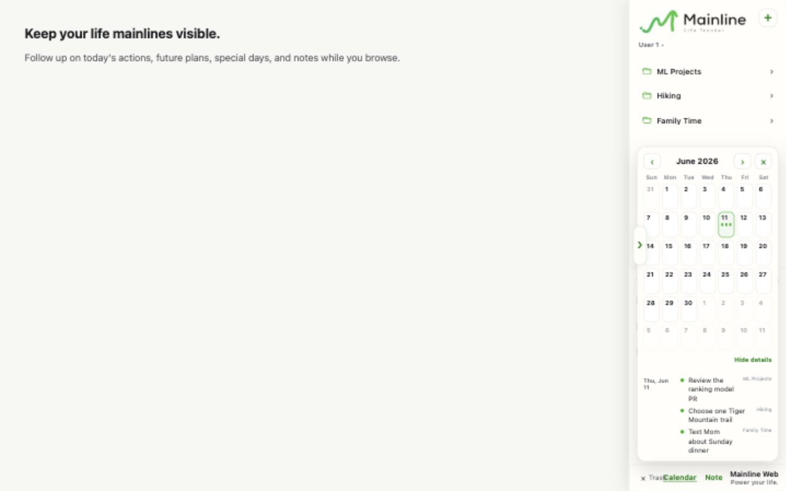

A life tracker in Chrome's side panel
Mainline
Do you know what matters today?
Keep your life mainlines one click away. Turn them into a few clear daily actions, without getting lost in information or an endless todo list.
Install the Chrome extension and open Mainline from the toolbar.
Less collection. More direction.
Your todo list remembers tasks.
Mainline remembers why.
Most productivity tools keep asking you to add more. Mainline helps you return to a small number of life directions, then decide what deserves attention today.
Always nearby, never in the way
Keep today one click away while life happens.
Mainline opens in Chrome's side panel, so your plans stay close without asking for broad access to every webpage.
- 01 Organize actions under the life projects they serve.
- 02 See a clean Today list without repeating every folder name.
- 03 Keep completed actions visible so the day tells a story.
Follow up on today's actions from the side panel.
One system, three horizons
Act today. Plan ahead. Look back.
Your current horizon
A short list that still knows the bigger picture.
Choose today's actions from your mainlines, add quick actions when needed, and finish the day with a clear record of what moved.
Outline the proposal
Creative workThirty-minute walk
HealthPlan Sunday dinner
Family
Today, you moved:
Creative work Health FamilyMainline for family
Manage your work.
Help good habits grow.
Profiles let one person or one household use Mainline without mixing every role together. Keep a Work mode for office priorities, a Parent mode for home coordination, and a child profile for building simple daily habits.
Add, rename, or remove profiles as your work and family roles change.
Client follow-upSend the decision summary before 3 PM
OfficeDeep work blockDraft the ranking model memo
FocusTeam rhythmPrepare tomorrow's standup notes
TeamUse Work mode during office hours so client follow-ups, deep work, and team commitments stay visible without mixing into family plans.
A calm daily rhythm
Start with intention.
End with evidence.
- MorningChoose what matters today.
Pull one useful action from each active mainline.
- During the dayReturn when attention drifts.
Mainline stays one click away in Chrome's side panel.
- EveningSee what you actually moved.
Completed actions remain visible and collect into Review.
- Looking aheadPlan without crowding today.
Use Calendar and Special days for the future horizon.
Your life is more than a list
Ready to follow your mainline?
Begin with one direction that matters, and one action you can take today.
Try Mainline No new system to maintain. Just a clearer way back.